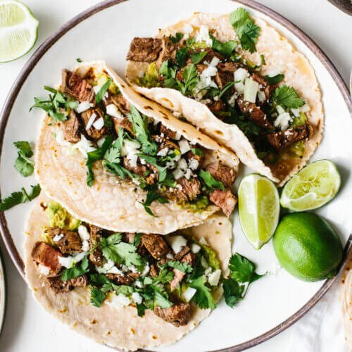

Dion Davis

DionDavis@Email.com
I'm currently a freelance graphic artist & I mix music as well. Both being 2 of my favorite hobbies, I also make money doing them as well though. I have been doing graphic design for almost 20 years, but have only been serious about expanding in the field for the last 7. I'm a creative at heart, so I really enjoy it. Click here to visit my port!
I also mix music! I primarily music for artists, coaches, dance teams, and stage performers all over the US. From stage shows to mashups, I do a little bit of everything. I really love music. My pops was a DJ when he was young, and my mom a singer. So music is in my blood! Click Here to visit my soundcloud!
Some of my other favorite hobbies include photography, writing, blogging, reading, cooking, art, dance. If it's creative, i'm probably into it. I am obessed with chicken and tacos, can eat them on a daily basis, no skips!
I don't really have a favorite sports team to be honest with you. I was on the swim team when I was younger, and martial arts, but I don't know if those apply, and they don't have teams per se. Lol. I enjoyed the Cowboys and the Titans back when I cared more about football.
Spirited GD
Soundcloud- 
Taco Wikipedia 
KFC